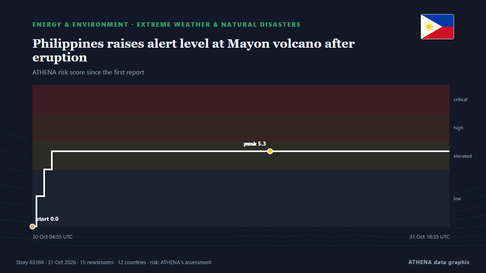

Ενέργεια, Πόροι & Περιβάλλον
Οι τίτλοι των ειδήσεων παρουσιάζονται στα αγγλικά, όπως δημοσιεύτηκαν.

Ακραία καιρικά & φυσικές καταστροφέςPhilippines raises alert level at Mayon volcano after eruption
Residents in Albay province heard a loud boom around noon on Friday (Oct. από Gulf News
| 18 Οκτ | 8 |
|---|---|
| 19 Οκτ | 50 |
| 20 Οκτ | 24 |
| 21 Οκτ | 56 |
| 22 Οκτ | 86 |
| 23 Οκτ | 65 |
| 24 Οκτ | 37 |
| 25 Οκτ | 67 |
| 26 Οκτ | 78 |
| 27 Οκτ | 113 |
| 28 Οκτ | 87 |
| 29 Οκτ | 70 |
| 30 Οκτ | 65 |
| 31 Οκτ | 12 |
Brent crude oil price rises
Oil prices experienced a decline of over 1% after hitting six-month peaks, primarily due to geopolitical unrest in Saudi Arabia. από Times of India
UAE brings oil tanker leak under control, coastal cleanup continues
DUBAI: The UAE has brought an oil tanker leak under control, with no new leakage detected, as environmental cleanup operations continued along coastlines affected by the spill, the Emirates News… από Arab News
Infected hay bales to be buried in a safe location
Hay bales contaminated with the food and mouth virus (FMD) that were intended to be buried in Troulli will be moved to another safe location so as not to affect livestock units in the adjacent areas… από Cyprus Mail
Fire pollution killed 3,560 people in Indonesia in September
JAKARTA: Air pollution from smoke emitted by months of wildfires across Indonesia caused an estimated 3,560 deaths in the vast Southeast Asian archipelago in September alone, according to a… από New Straits Times
India’s animal centre vows reset after criticism
JAMNAGAR: Behind guarded gates resembling a maharajah’s palace are hundreds of elephants and big cats, giraffes grazing in a mock savannah, and chimpanzees and orangutans swinging from ropes. από Dawn
Tankers defy sharp escalation of Iranian attacks to keep crude oil flowing through Strait of Hormuz
Soaring freight rates are giving tankers a big financial incentive to run the gauntlet through the Strait of Hormuz. από CNBC World
Bhutan glacial lake outburst triggers flood
Bengal forest minister Manoj Oraon issued a warning to residents near the Sankosh river. από Times of India
Syria flash floods kill at least 5, force hundreds of families from camps
Heavy rain and flash floods left five people dead, including four children, and forced some 375 families to flee displacement camps in Syria’s Raqqa province. από Al-Monitor
Britain bars entry to Swedish academic ahead of appearance with Palestine Action founder
LONDON, Oct 30 - Swedish climate academic Andreas Malm said on Friday he had been denied entry to Britain, where he was due to speak alongside the co-founder of Palestine Action, a group banned as a… από The Straits Times
Wallenius Wilhelmsen orders four LNG dual-fuel PCTCs
Wallenius Wilhelmsen has ordered four LNG dual-fuel Pure Car and Truck Carriers from China’s Jinling Shipyard and secured options for eight additional vessels. από Container News
Rising utility bills wiping out workers’ pay gains – Minority
The Minority in Parliament says rising electricity and water bills are wiping out public sector workers’ salary gains. από MyJoyOnline
Carlyle and EBRD agree to sell Black Sea Oil & Gas to Mazarine Energy
Global investment firm Carlyle and the European Bank for Reconstruction and Development (EBRD) have agreed to sell Black Sea Oil & Gas (BSOG), Romania’s largest offshore natural gas producer, to… από Business Review (Romania)
US oil giants report profit surge again on Iran war
The surge in US petroleum earnings comes on the heels of similar increases at European companies as the US-Israeli war on Iran drags on. από The New Arab
Bodies Discovered After Rig Sinks Offshore Gabon
'An underwater remotely operated vehicle has located the bodies of three individuals', Borr Drilling revealed. από Rigzone
US touts role in Gulf oil exports as CENTCOM chief flies over Hormuz Strait
LONDON: The chief of US Central Command, Brad Cooper, flew over the Strait of Hormuz in a CH-47 Chinook helicopter on Sunday as the command said US forces had helped Gulf partners export more than… από Arab News
DayOne and Sembcorp to Explore Integrated Power and Energy Solutions for Data Centers in Asia
MOU advances DayOne’s approach to securing power and energy solutions for rapid and responsible growth across the region SINGAPORE, Oct. από Laotian Times
Equinor Doubles Estimate for Afrodite Gas Discovery
An appraisal well showed that the Afrodite discovery near the Kvitebjorn field on Norway's side of the North Sea potentially holds 77-180 million barrels of oil equivalent recoverable natural gas and… από Rigzone
Mahama appoints 15 officers of the Ghana Prisons Service
By: Celestine Avi and Seth Eyiah President John Dramani Mahama has outlined ongoing efforts to modernise Ghana’s transport infrastructure, including roads, ports, airports and railway networks. από GBC Ghana Online
IAEA says Zaporizhzhia nuclear plant worker killed in drone attack
The plant has repeatedly faced threats to nuclear safety, including drone attacks, disruptions to external power supplies, and incidents affecting plant workers. από Kyiv Independent
Yemeni army investigating reports of Houthi use of toxic gases in Taiz
Military says civilians and resistance fighters suffered suspected poisoning and suffocation after alleged use of toxic substances in projectiles. από Anadolu Agency (English)
Rosatom builds floating nuclear power fleet
Russia's state nuclear corporation Rosatom has begun developing a fleet of floating nuclear power plants for domestic use, CEO Alexey Likhachev said Wednesday on the sidelines of the Russia-Africa… από AzerNews
Europe’s debt stress is hitting corporate borrowing costs. Goldman flags who’s vulnerable
Sovereign debt pressure and heavy bond issuance are raising European corporate borrowing costs, squeezing companies with weaker balance sheets, Goldman said. από CNBC World
Medical experts warn climate change is now a 'global health emergency'
The damage wreaked by climate change on human health is escalating, experts warn, with deaths from heat, drought and other extreme weather rising faster than the world is taking action to limit… από RFI English
World is far behind on ecosystem restoration target, UN says
SINGAPORE: Restoration is underway on 252 million hectares (973,000 square miles) of degraded ecosystems across 149 countries, the United Nations' environment agency said on Thu... από Oman Observer
Pakistan, Saudi Arabia discuss investment in agriculture, minerals and mining
Finance minister, Saudi envoy also discuss trade, investor confidence and regional economic cooperation. από Express Tribune
Antonelli following in the footsteps of Farina and Ascari
MEXICO CITY: Alberto Ascari was a boyhood hero for US motor racing great Mario Andretti, now 86, but few of Kimi Antonelli’s compatriots were around when Italy’s last Formula One world champion was… από New Straits Times
QatarEnergy becomes largest buyer of US LNG with new 20-year Woodside deal
QatarEnergy signs a 20-year agreement to buy 3 million tonnes of US LNG annually from Woodside Energy, becoming the largest US LNG buyer. από Arabian Business
Severe thunderstorms expected in parts of KwaZulu-Natal
The SA Weather Service has issued Yellow Level 4 and Level 2 warnings for severe thunderstorms. από SABC News
UK Rules Out Winter Energy Shortages as Gas Prices Soar
There is no risk of power or gas outages during this winter in the UK, as there will be sufficient generation and gas supply, the National Energy System Operator has said in its early winter outlook. από OilPrice.com
Six killed in cyclone off India's eastern coast
A cargo vesselwith 20 crew members was grounded off the coast of Andhra Pradesh remained stalled on Thursday. από Express Tribune
5.2-magnitude quake hits Vanuatu Islands -- GFZ
SYDNEY, Australia (AFP)—A 7.2 magnitude earthquake off Vanuatu triggered a tsunami warning on Saturday, the Pacific Tsunami Warning Centre said. από Jamaica Observer
Trump’s Russian diesel deal benefits Moscow more than US consumers, experts say
Trump’s diesel deal gives Moscow cash and leverage, while Ukraine is pressed to give up one of its few advantages on the battlefield and in negotiations, experts and U.S. lawmakers said. από Defense News
Girl seriously injured in wolf attack at German wildlife park
The eight-year-old was in an enclosure with other children and a staff member when she was attacked. από BBC News
Russians kill man in Zaporizhzhia Oblast and attack public transport in Zaporizhzhia for third time in one day – video
A Russian attack killed a 49-year-old man in Bilenke and injured three, while an FPV drone hit a bus in Zaporizhzhia in the third strike in one day. από Ukrainska Pravda (English)